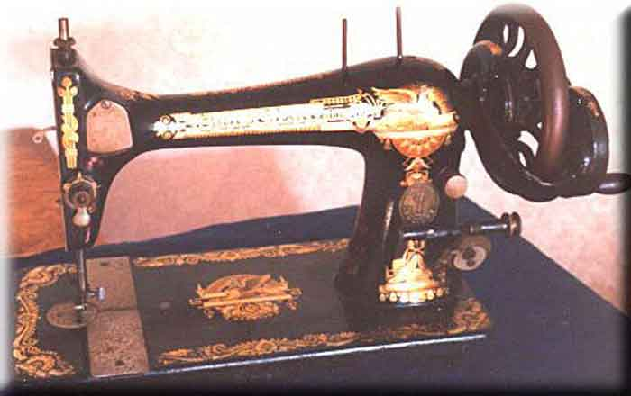
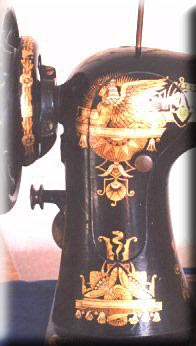

SINGER VIBRATING SHUTTLE MACHINES
Singer 27-2
Front View / Rear Inspection Plate
Front View

Rear Inspection Plate

© Alan Quinn 2003
Pictures posted on this page may not be reproduced or distributed in part or in whole without the prior written permission of the relevant copyright owner